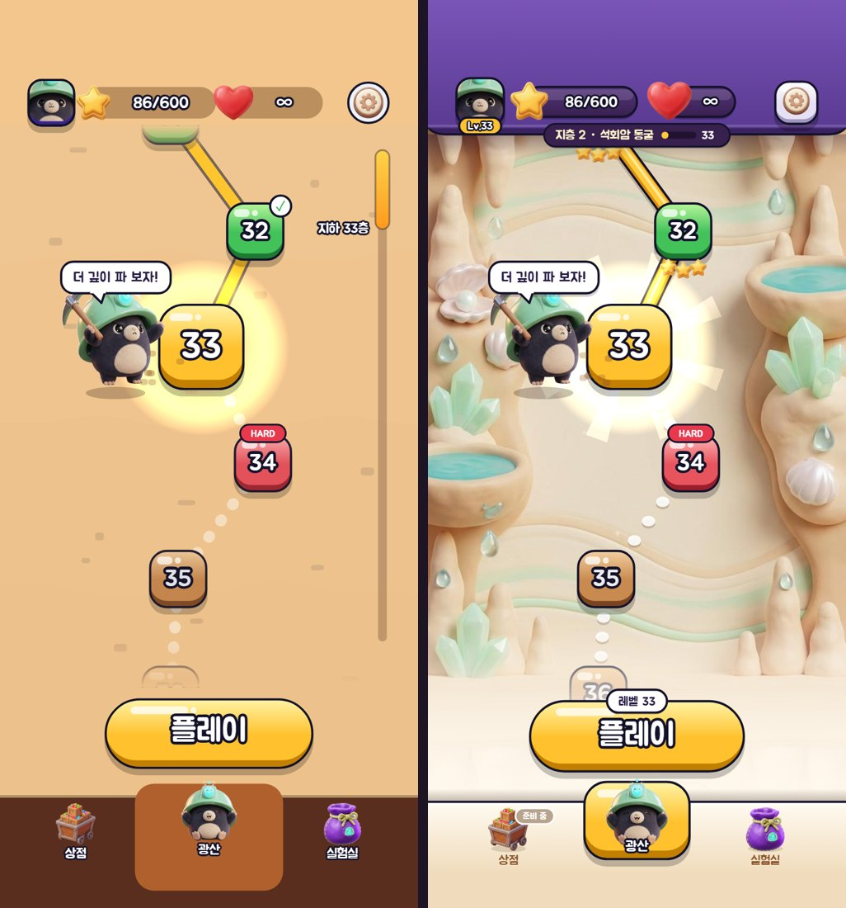
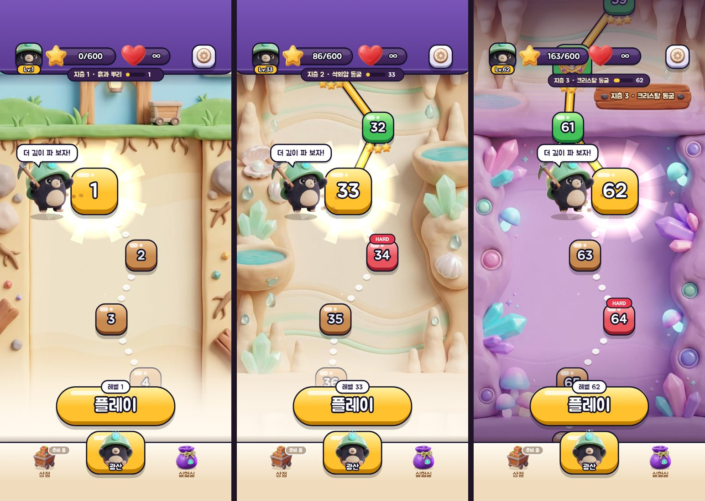
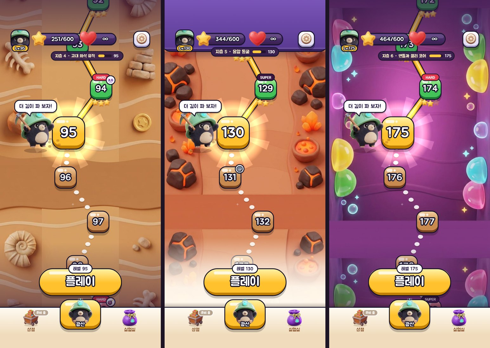
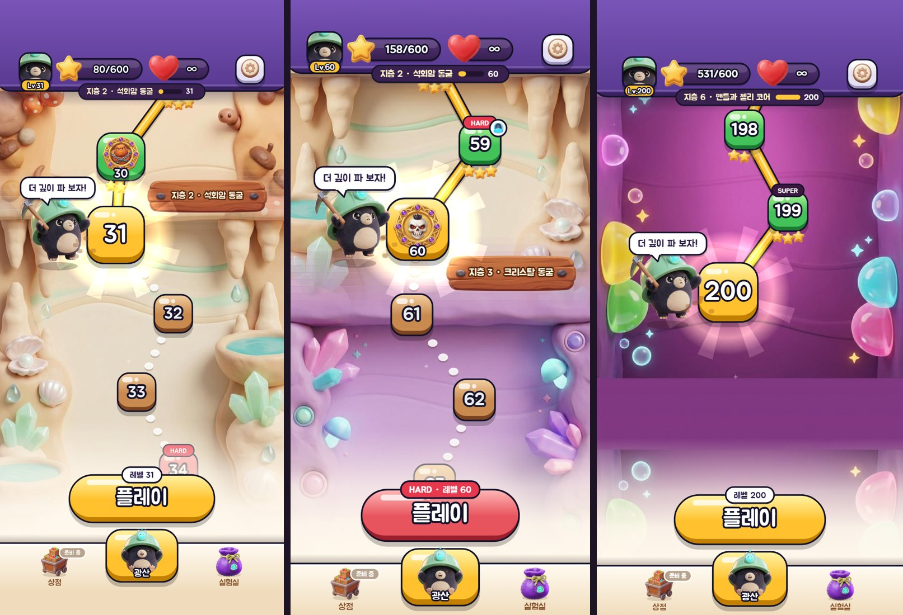

젤리 몰 로비 다듬기 (v19.2)
구조(아래로 파 내려가는 길 · 큰 지금 판 · 핍)는 그대로 두고, 단색 배경을 지층별 클레이 그림으로 바꾸고 위 · 아래 UI를 다시 그렸어요. 게임 열기
전 → 후 (레벨 33)

왼쪽 = v19.1, 오른쪽 = v19.2
지층마다 다른 그림

지상 · 흙과 뿌리(1) / 석회암 동굴(33) / 크리스탈 동굴(62)

고대 화석 유적(95) / 용암 동굴(130) / 맨틀과 젤리 코어(175)
바뀐 점
- 배경: 지상 입구 + 지층 6개 클레이 그림(가운데는 비우고 양옆만 장식). 지층이 바뀌는 곳은 자연스럽게 섞이고 나무 간판이 서요.
- 위: 자주색 클레이 받침 위에 아바타(Lv) · 별 · 하트 · 설정, 그 아래 지금 지층 이름과 진행 줄.
- 판: 깬 판 아래 별 3개, 새 기믹이 나오는 판에 기믹 배지, 지금 판에 빛살.
- 아래: 플레이 단추에 레벨 꼬리표와 지나가는 윤기(HARD는 빨간 단추), 크림색 탭 받침과 솟은 가운데 탭.
여러 화면 크기

아이폰 사파리 엔진(지층 경계 · 보스 다음 판) / 작은 안드로이드 360 / 아이폰 앱(마지막 판)